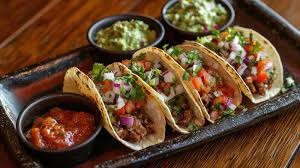

Tacos
Los tacos forman parte de la comida cotidiana y callejera de México, disponibles a cualquier hora del día en taquerías, mercados y puestos ambulantes. Además, cada región tiene su estilo particular (por ejemplo: tacos al pastor en Ciudad de México, tacos de canasta, tacos de birria en Jalisco, tacos de pescado en Baja California).
